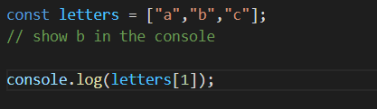
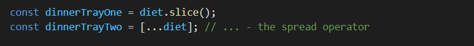

Arrays are created like in any other programming language by using squared brackets to denote that the variable or constant is of the array type. The array starts at position 0 and ends at the last index-1. They are object and are very much close to Lists like in Java. The length of the array is increased dynamically when using the push() function on the array or even assigning a value to a position which is normally out of bounds for the array. The values saved in the positions of the array can be of diffrent types. Also important is that you have to use the square notation to access an item in the array.
To copy over an array we can use either the slice() funtion or a spread operator to copy it.
In the image below we can see other regularly used functions on arrays